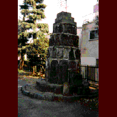

正光寺/東京都北区 
不思議な場所である。国道に面した駐車場の入口の両脇に石の門柱が建っているのだが、そこには左に「正光寺」右に「大観音」と刻まれているのだ。ただの駐車場なのに。
場所は北区の赤羽。目の前の橋を渡れば埼玉というロケーションにこの寺はある。
門柱の前に立つ。一体何処に寺があるのかと思い、駐車場に入ってみる。
やっぱりただの駐車場だが、正面突き当たりに一般道があり、その向こうに山門が見える。ひとつ謎が解けた。やはり寺があったのだ。
参道の途中を一般道が横切り、手前が駐車場になってしまったので、寺があるのが分からなかった、という訳である。
寺があるということは大観音もあるのだろう。山門を潜る。するとそこには意外な光景が現れたのである。
真正面に大観音はいた。確かに居たのだが、どうも変だ。いや、高さ10E程の大観音自体は別に特別変わったものではなく（顔は少しイっちゃってるが）、普通の（もしも大観音というものが普通であるならば）銅製のモノなのだが、その大観音の置かれている境内の様子が妙なのだ。
山門は立派である。潜ったところにある鋳造製の灯籠も、まあ立派なものだ。
しかしそこには本堂がないのである。観音像が境内の真ん中にポツンと立っているだけなのである。そしてその周りはやっぱり駐車場になってしまっているのである。といってもこちらは山門前の駐車場と違い、空き地に車が停めてあるといった感じなのだ。
境内をさらに見回してみる。灯籠の奥に鐘楼があるのだが鐘はついていない。浮浪者が下で昼寝をしている。
無縁墓なのだろう、石の地蔵を3段ケーキ状に積み上げた雛壇の上にも何かが乗っていた形跡はあるが、取り払われており、何もない。検地積みされた立派な台座の上には、その台座の大きさに対してやけに小さすぎる石仏が乗っている。そして隅のほうには首の取れた地蔵や無縁墓の残骸が積まれている。
一体どうしたことか。これだけ立派な観音像や門が残っているのだから建て替えのために本堂を解体でもしたのだろうか。それにしては本堂を建てる様子もないし、もしかしたら寺自体はなくなってしまって、観音像や門だけが残されて、その他は駐車場になってしまったのだろうか。
観音像の左側に寺の名を掲げた庫裏らしき住宅があったが留守のようだったので、謎は解けず終いだった。
やっぱり寺の廃虚なんだろうか。御存じの方、お知らせ下さい。
気が付くと、いつの間にか自転車に乗ったアーミー服のオヤジが現れて猫と会話をしていた。
もう、これは白昼に出現したドグラマグラの世界だ。
1998.5.
珍寺大道場 HOME